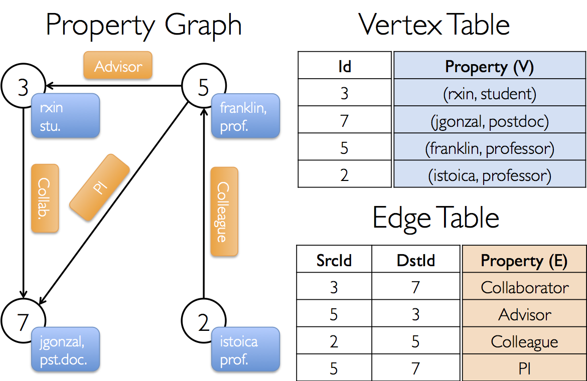

Analyzing Wikipedia Event Streams using Spark 2.0 and GraphX
Myles Baker / CapTech / @mydpy
What is Spark?
Apache Spark is a cluster computing platform designed to be fast and general-purpose
- Optimized for in-memory computing on large datasets
- General execution model supports batch and continuous applications
- Native APIs in Java, Scala, Python, and R
- Easy-to-use API and application integration
- Fast uptime for data engineering applications
- Empowers analysts and stakeholders
Why Spark?

This paradigm unlocks intelligence on your data not previously possible
...but is designed for batch applications and disk I/O. What about real-time?
...that requires special tools and imposes resource demands

Spark is generating a lot of interest
The Open Source Community is Abandoning Hadoop MapReduce
MapReduce
Spark
...And So is Cloudera
...Oh, and IBM Invested 300 Million Too
How fast is Spark?
- 3x as fast
- 10x fewer machines

How does Spark work?
A new abstraction: Resilient, Distributed Datasets

Resilient Distributed Dataset: An abstraction that enables efficient data reuse in distributed processing environments
RDD focal points:
- Fault-tolerant, parallel data structure
- For interactive, iterative operations
- Immutable
- Transformations are logged and performed lazily
- User-controlled persistence and partitioning
Spark's implementation of RDDs:
- Language-intergrated interface (functions inline, etc.)
- Runs inside a JVM to easily interact with Hadoop filesystem
- Statically typed for performance
What's New in Spark 2.0?
- Tungsten Enhancements
- Enhancements to internal memory management
- SPARK-12785
- SPARK-8641
- Structured Streaming
- Streaming DataFrame for Continuous Applications
- SPARK-8360
- Whole-stage Code Generation
- Optimized input/output using Parquet (columnar data storage format)
- Translations between Dataframes (Spark 1.3) and Datasets (Spark 1.6)
Demo
Questions before we get started?
Getting started with Spark
- Download the RVA Data Hackers Github Repository.
- Follow the instructions in README.md
Launching Spark
>spark-shell
>pyspark
>spark-submit --class <class_name> --master <context_mode> \
><jar_file> [args]
Interactive Spark
16/03/15 09:20:05 INFO Utils: Successfully started service 'SparkUI' on port 4043.
16/03/15 09:20:05 INFO SparkUI: Bound SparkUI to 0.0.0.0, and started at http://192.168.23.80:4043
16/03/15 09:20:05 INFO Executor: Starting executor ID driver on host localhost
16/03/15 09:20:05 INFO Utils: Successfully started service 'org.apache.spark.network.netty.NettyBlockTransferService' on port 57673.
16/03/15 09:20:05 INFO NettyBlockTransferService: Server created on 57673
16/03/15 09:20:05 INFO BlockManagerMaster: Trying to register BlockManager
16/03/15 09:20:05 INFO BlockManagerMasterEndpoint: Registering block manager localhost:57673 with 511.1 MB RAM, BlockManagerId(driver, localhost, 57673)
16/03/15 09:20:05 INFO BlockManagerMaster: Registered BlockManager
Welcome to
____ __
/ __/__ ___ _____/ /__
_\ \/ _ \/ _ `/ __/ '_/
/__ / .__/\_,_/_/ /_/\_\ version 2.0.0-SNAPSHOT
/_/
Using Python version 2.7.10 (default, Jul 14 2015 19:46:27)
SparkContext available as sc, SQLContext available as sqlContext.
In [1]: sc
Out[1]:
Creating an RDD
rdd = sc.textFile("intro/data/boa-constrictor")
16/03/15 09:21:49 INFO MemoryStore: Block broadcast_0 stored as values in memory (estimated size 107.7 KB, free 107.7 KB)
16/03/15 09:21:49 INFO MemoryStore: Block broadcast_0_piece0 stored as bytes in memory (estimated size 10.2 KB, free 117.8 KB)
16/03/15 09:21:49 INFO BlockManagerInfo: Added broadcast_0_piece0 in memory on localhost:57673 (size: 10.2 KB, free: 511.1 MB)
16/03/15 09:21:49 INFO SparkContext: Created broadcast 0 from textFile at NativeMethodAccessorImpl.java:-2
silverstein = rdd.collect()
...
[u'Im being swallered by a Boa Constrictor, a Boa Constrictor, a Boa Constrictor,',
u'Im being swallered by a Boa Constrictor,',
u'and I dont - like snakes - one bit!,',
u'Oh no, he swallered my toe.,',
u'Oh gee, he swallered my knee.,',
u'Oh fiddle, he swallered my middle.,',
u'Oh what a pest, he swallered my chest.,',
u'Oh heck, he swallered my neck.,',
u'Oh, dread, he swallered my - (BURP)']
Transforming an RDD
BoaConstrictor = rdd.filter(lambda line: "Boa" in line)
BoaConstrictor.collect()
Out[16]:
[u'Im being swallered by a Boa Constrictor, a Boa Constrictor, a Boa Constrictor,',
u'Im being swallered by a Boa Constrictor,']
Acting on an RDD
words = rdd.flatMap(lambda line: line.split(" "))
counts = words.map(lambda word:(word,1)).reduceByKey(lambda x,y: x+y)
counts.collect()
Out[23]:
[(u'a', 5),
(u'and', 1),
(u'what', 1),
(u'(BURP)', 1),
(u'being', 2),
(u'heck,', 1),
(u'chest.,', 1),
(u'-', 3),
(u'Constrictor,', 4),
(u'I', 1),
(u'Im', 2),
(u'swallered', 8),
(u'Oh,', 1),
(u'no,', 1),
(u'dread,', 1),
(u'my', 6),
(u'knee.,', 1),
(u'like', 1),
(u'snakes', 1),
(u'toe.,', 1),
(u'Oh', 5),
(u'neck.,', 1),
(u'pest,', 1),
(u'one', 1),
(u'fiddle,', 1),
(u'middle.,', 1),
(u'bit!,', 1),
(u'gee,', 1),
(u'Boa', 4),
(u'he', 6),
(u'by', 2),
(u'dont', 1)]
Analysis using RDDs
Boa = counts.filter(lambda pair: pair[0] == "Boa")
Boa.collect()
Out[26]: [(u'Boa', 4)]
Spark SQL: An Analyst's Best Friend
df = sqlContext.read.text("intro/data/boa-constrictor")
df.registerTempTable("df")
df = sqlContext.read.text("intro/data/boa-constrictor")
df.registerTempTable("df")
sqlContext.sql("select * from df where value like '%Boa%'").show()
+--------------------+
| value|
+--------------------+
|Im being swallere...|
|Im being swallere...|
+--------------------+
sqlContext.sql("select * from df where value like '%Boa%'").take(10)
Out[30]:
[Row(value=u'Im being swallered by a Boa Constrictor, a Boa Constrictor, a Boa Constrictor,'),
Row(value=u'Im being swallered by a Boa Constrictor,')]
words = df.rdd.flatMap(
lambda row: str(row.asDict()['value'])\
.split(" "))\
.map(lambda word: (word,1))
words.toDF().registerTempTable("words")
Note: DataSet not yet supported in PySpark
sqlContext.sql("""
SELECT _1, count(*)
FROM words
WHERE _1 = 'Boa'
GROUP BY _1
ORDER BY count(*) DESC
""").show()
+---+--------+
| _1|count(1)|
+---+--------+
|Boa| 4|
+---+--------+
sqlContext.sql("""
SELECT _1, sum(_2)
FROM words
WHERE _1 = 'Boa'
GROUP BY _1
ORDER BY count(_2) DESC
""").show()
+---+-------+
| _1|sum(_2)|
+---+-------+
|Boa| 4|
+---+-------+
Java Example using Spark-submit
import java.util.Arrays;
import java.util.List;
import java.lang.Iterable;
import scala.Tuple2;
import org.apache.commons.lang.StringUtils;
import org.apache.spark.api.java.*
import org.apache.spark.api.java.function.*
public class WordCount {
public static void main(String[] args) throws Exception {
String master = "local";
JavaSparkContext sc = new JavaSparkContext(
master, "wordcount", System.getenv("SPARK_HOME"), System.getenv("JARS"));
JavaRDD<String> rdd = sc.textFile("spark-input/boa-constrictor");
JavaPairRDD<String, Integer> counts = rdd.flatMap(
new FlatMapFunction<String, String>() {
public Iterable<String> call(String x) {
return Arrays.asList(x.split(" "));
}}).mapToPair(new PairFunction<String, String, Integer>(){
public Tuple2<String, Integer> call(String x){
return new Tuple2(x, 1);
}}).reduceByKey(new Function2<Integer, Integer, Integer>(){
public Integer call(Integer x, Integer y){ return x+y;}});
counts.saveAsTextFile("output/boa-constrictor");
}
}
>spark-submit --class WordCount --master local \
>spark-demo.jar
Introduction to GraphX
About GraphX
- Only Scala API is Supported
- Python Support Tracking in SPARK-3789
- Graph Frames (GraphX on Dataframes) project will replace GraphX
- Graph Frames Documentation
Significant overlap in API usage,
but Graph Frames is still in development.
Key Terms
Vertex
Edge
Property Graph
class Graph[VD, ED] {
val vertices: VertexRDD[VD]
val edges: EdgeRDD[ED]
}
Relationship between Property Graph, Vertex Table, and Edge Table

Appendix: How do I learn Spark?
- Learning Spark
- Databricks Community Edition Beta Wishlist
- Big Data Analysis with Spark (Included in Databricks)
- Spark Summit Sessions and Tutorial Videos
YouTube is Great (Find Newer Videos)
Appendix: Scala
Content courtesy of David Der / @davidder
Functional
public List<Product> getProducts(List<Order> orders) {
List<Product> products = new ArrayList<Product>();
for (Order order : orders) {
products.addAll(order.getProducts());
}
return products;
}
Vs.
def products = orders.flatMap(o => o.products)
Spark operations look
awfully familiar...
- map( { .. } )
- filter( { .. } )
- flatMap( { .. } )
- reduceByKey( { .. } )
- reduce( { .. } )
- foreach( { .. } )
Java 7
JavaRDD<String> distFile = sc.textFile("README.md");
// Map each line to multiple word
JavaRDD<String> words = distFile.flatMap(
new FlatMapFunction<String, String>() {
public Iterable<String> call(String line) {
return Arrays.asList(line.split(" "));
}
});
Java 8
JavaRDD<String> distFile = sc.textFile("README.md");
JavaRDD<String> words =
distFile.flatMap(line -> Arrays.asList(line.split(" ")));